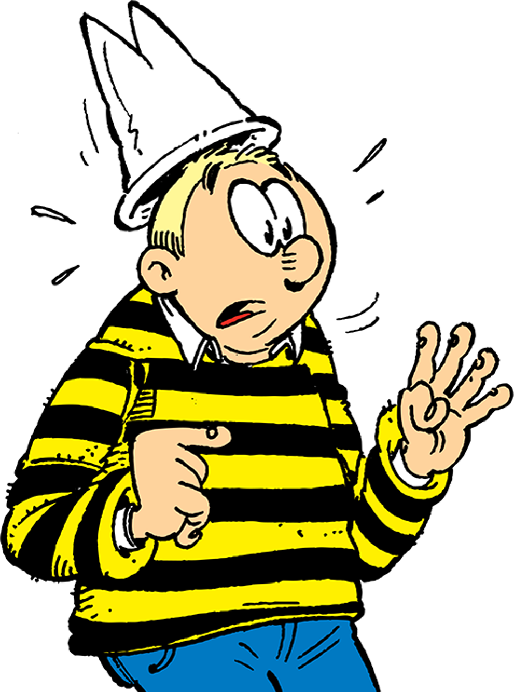

DUCOBU · TOME 30
7/10
Question 6/7

Dans le tome 30, avec quoi Ducobu essaie-t-il de tricher ?
A
Un parchemin magique
B
Une machine à remonter le temps
C
Drones, IA et commandes en ligne
D
Un perroquet savant
Ducobu © Zidrou & Godi — Éditions du Lombard
GLISSE ➜